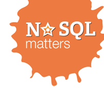

Muchas veces en mi trabajo oigo frases provenientes de los técnicos, hacia los gestores, del estilo “no sé qué trabajo hacéis los gestores” o “no hacen más que reunirse todo el día y hacer reenvíos de emails, no hacen nada”, y así puedo enumerar cientos de ellas.
¿Qué hay de cierto en estos comentarios? En este breve post intento plasmar mi visión de cual es el trabajo de un gestor, recogida desde mi corta experiencia, de un técnico que ha pasado a gestor dentro del ámbito de una empresa tecnológica.
Leer más…
Comentarios

Acabamos de publicar el noveno episodio de nuestro podcast, el último del año, por los pelos!!!!
En él, encontraréis algunos comentarios sobre las conferencias que tuvieron lugar durante Noviembre, en Barcelona, como la VelocityConf, y hablaremos un poco sobre los microservicios.
Comentarios

Los pasados 20 y 21 de Noviembre tuvo lugar la tercera edición de la NoSQL matters Barcelona 2014 a la que tuvimos la oportunidad de asistir, y que este artículo trata de resumir. Recordad que estas conferencias comprenden un día de talleres, y otro de charlas, celebrándose ambos en las instalaciones del Hospital de Sant Pau, conocidas como Casa de la Convalescència.
Como cada año, ha sido una oportunidad espléndida de encontrarse con gran parte de la comunidad NoSQL, y hablar de los últimos cambios y novedades. En cuanto a los talleres, este año ha habido más afluencia. Además, se podría decir que la coincidencia con la Strata de O'Reilly podría haber provocado que mucha gente se decidiera a asistir también al evento sobre NoSQL.
Leer más…

Aunque hace unos días que pasó la VelocityConf Europe 2014, publicamos este artículo para destacar algunas de las charlas que se dieron en el evento.
En líneas generales, el evento estuvo muy bien. Muchos de los ponentes, que resultaban muy accesibles, eran también autores de libros de O'Reilly, tanto de la talla de Steve Souders o John Allspaw como de la relevancia de Ilya Grigorik. Durante los dos primeros días, hubo algunas firmas de libros, que regalaban a los veinte primeros.
Leer más…
Comentarios
Aunque con algo de retraso, os anunciamos la disponibilidad del octavo episodio de nuestro podcast, que publicamos hace unos días.
Tras la publicación de las vulnerabilidades Shellshock y Poodle, grabamos un debate sobre las vulnerabilidades y la reacción a ellas, que os ofrecemos en este episodio.
Comentarios